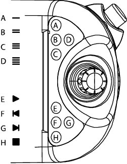

启动程序时，从程序指针处开始执行。 要从另一个指令开始，将程序指针移至光标处。
 | 警告 在执行启动时，机器人将移至程序中第一个编程的位置。 确保带有 TCP 的机器人不会遇到任何障碍。 |
操作 | |||
1 | 在 ABB 菜单中，点击 程序编辑器。 | ||
2 | 点击您想要启动的程序步骤，然后点击 Debug（调试），然后选择 PP to Cursor（PP 移至光标）。 | ||
3 |
| ||
4 | 按下 FlexPendant 上的 Start（启动）按钮（见下图中的 E）。  |
| 编程和测试 - 测试 | ||
| 按特定指令运行程序 | ||
| 概述 | 启动程序时，从程序指针处开始执行。 要从另一个指令开始，将程序指针移至光标处。 | ||||||||||||
| |||||||||||||
| 按特定指令运行程序 |
|